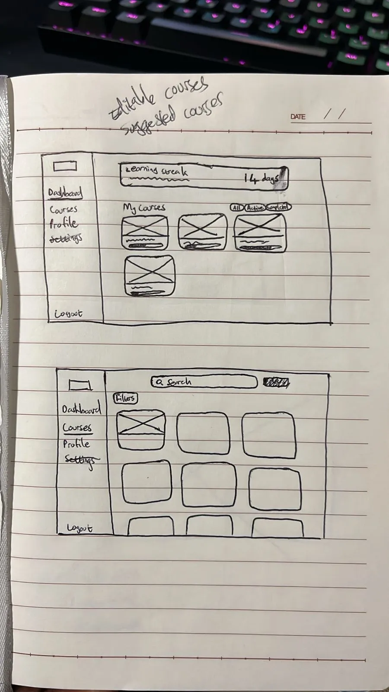

Wireframes
Overall Design Philosophy
Clean & Focused: The interface is minimalistic to reduce cognitive load, especially for users concentrating on learning a new language.
Modular & Consistent: The Course Builder uses clear, reusable components (text, multiple choice, audio input) that align with their display in the Lesson Player.
Gamification Hints: Subtle use of progress bars, badges, streak counters, and positive reinforcement to encourage consistent learning.
Community-First: Features for rating, commenting, and suggesting edits are easily accessible but non-intrusive.
Pages Overview
1. Course Explorer
Purpose: The homepage and primary discovery mechanism for learners.
Wireframe Discussion:
Hero Section: A prominent search bar with quick filters for
Language,Difficulty, andPopularity.Personalized Recommendations: A section titled “Continue Your Journey” or “Recommended for You” displays courses in languages the user is studying.
Browse Sections: Scrolling sections categorize courses: “Most Popular,” “Newly Added,” “Featured Constructed Languages,” etc.
Course Cards: Each card includes: - Course Title & Language Flag/Name - Author username - Average Rating (stars) and number of reviews - Difficulty Level (color-coded: Beginner, Intermediate, Advanced) - A short preview image/icon of the course content - A “Preview” button to view the course structure and a sample lesson before enrolling.
Advanced Search/Filter Page: Accessible from the main search bar, this modal or page includes all tags, a full language list (with search), course length, and specific content types (e.g., “has audio exercises”).
2. Lesson Player
Purpose: The core learning experience, designed to be immersive, responsive, and highly functional.
Wireframe Discussion:
Header Context: - Displays Course title, current Unit/Lesson title (e.g., “Spanish 101 > Unit 3: Food > Lesson 2: Ordering at a Restaurant”). - A collapsible sidebar icon reveals the course outline, showing completed, current, and upcoming lessons for navigation.
Main Content Area: Dynamic, changing based on lesson component type: - Text/Instruction Component: A clean, readable panel with formatted text, examples, and highlighted key points. - Multiple Choice Question: Clear question prompt, large tap-targets for answers, with feedback on correct/incorrect selections. - Audio Component: A large play button for native speaker recordings, a record button for pronunciation practice, and a waveform visualizer for comparison. - Image Matching: Drag-and-drop or click-to-match functionality.
Progress & Navigation Bar (Bottom): - A “Check Answer” or “Submit” button that changes to “Next” after interaction. - A progress bar within the current lesson (e.g., “3/5 exercises completed”). - Buttons for “Previous,” “Next,” and “Save & Exit” to bookmark progress.
Helper Tools (Floating/Icons): - A “Report an Issue” button tied to the Community API, allowing users to flag errors in questions or content.
3. Course Builder
Purpose: A powerful, user-friendly interface for authors to create and structure courses, designed as a multi-step process.
Wireframe Discussion (Multi-Part):
Part 1: Course Outline View
Resembles a project management tool or document outline.
Left Panel: A hierarchical list for structuring the course: - Top-level Units (e.g., “Greetings,” “Grammar Fundamentals”). - Within Units, Lessons can be added. - Authors can drag and drop to reorder units and lessons.
Main Panel: Editable content for the selected lesson: - Lesson Title & Objective: Fields to describe the learning goal. - Component Library: Drag-and-drop components (Text, Multiple Choice, Audio, Image, Flashcards) to build the lesson.
Settings/Properties Panel (Right): Configures difficulty, tags, and settings for the course or selected unit/lesson.
Part 2: Component Editor
For a “Multiple Choice” component, a form includes: - Field for the question prompt. - Fields for answer options, with checkboxes to mark correct answers. - Fields for feedback on correct/incorrect answers.
For an “Audio” component, includes an upload button and a transcript field.
Part 3: Preview Mode
A toggle button allows authors to view the lesson as a learner would, testing flow and functionality before publishing.
4. Review Dashboard
Purpose: A personalized, data-driven hub for reinforcement and spaced repetition, leveraging the Quiz Engine API.
Wireframe Discussion:
Overview Stats: Displays “Current Streak: 5 days,” “Items due for review: 27,” “Total Words Learned: 420.”
Spaced Repetition Queue: Lists items (vocabulary, grammar rules) “Due Today” and “Due Soon,” pulled by the Quiz Engine API. Each item has a “Review Now” button for a flashcard-style quiz.
Weakness Analysis: A section titled “Areas Needing Work” groups struggling items by category (e.g., “Grammatical Gender,” “Verb Conjugations in Past Tense”). Clicking a category starts a targeted practice session.
History Charts: Simple graphs showing activity and accuracy trends over the last week/month to visualize progress.
Quick Access: A button to start a general review session mixing all item types.
5. User Profile
Purpose: Tracks personal achievements, manages created content, and showcases community involvement.
Wireframe Discussion (Tabbed Layout):
Progress Tab: - Enrolled Courses: Visual cards with progress bars showing completion. - Daily streak counter and a calendar view of active learning days. - Achievements/badges (e.g., “Polyglot - Studying 5+ languages,” “Contributor - Suggested 10+ edits”).
Authored Courses Tab: - Lists user-created courses with stats: enrolled learners, average rating, total completions. - Buttons to edit, view analytics, or archive courses.
Contributions Tab: - A feed of community activity: ratings, comments, and suggested edits (with status: Pending, Accepted, Rejected). - A karma or “Helpfulness Score” based on upvotes for contributions.
Key User Flows to Prototype
The Learning Loop:
Course Explorer-> Preview -> Enroll ->Lesson Player-> Complete lesson -> Redirect toReview Dashboardfor recap.The Creation Flow: User Profile -> “Create New Course” ->
Course Builder(Outline -> Add Lessons -> Add Components -> Preview) -> Publish -> appears inCourse Explorer.The Feedback Loop: Inside
Lesson Player-> see a mistake -> click “Report Issue” / “Suggest Edit” -> submit correction -> notification to course author viaCommunity API.
Wireframes
{kind=link}